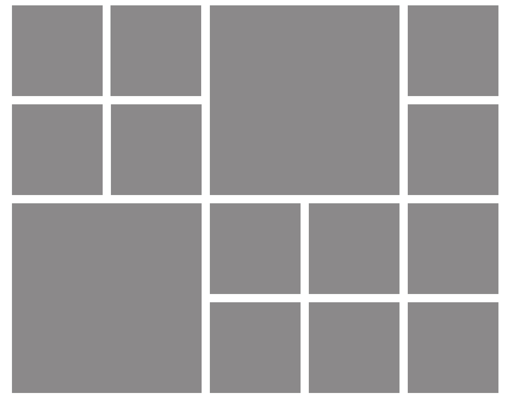
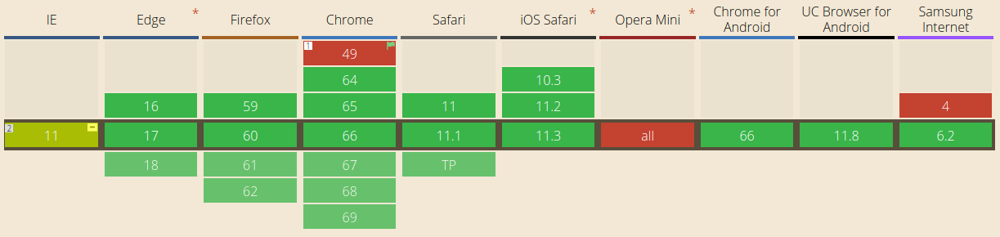

CSS Grid
Informations
On peut créer une grille avec des pistes à taille fixes en utilisant une unité comme le pixel. Pour les pistes à taille variable on peut utiliser le pourcentage ou la nouvelle unité "fr" créée à cet effet
Pour placer les éléments sur la grille, on peut utiliser le numéro ou le nom d'une ligne, ou cibler une zone particulière. La grille contient aussi un algorithme pour placer les éléments qui n'ont pas été placés explicitement.
Il peut arriver que l'on place plusieurs éléments dans une même cellule, ou que des zones se chevauchent. La superposition peut être contrôlée à l'aide de la propriété z-index. La grille est une spécification puissante qui peut être combinée avec d'autres modules CSS tels que flexbox. Le point de départ est le conteneur.
Les propriétés "grid-template-columns" et "grid-template-rows" permettent de définir des colonnes et des rangées. Celles-ci définissent les pistes. Une piste est l'espace entre deux lignes d'une grille.
Que l'on crée une grille explicite, ou que l'on définisse la taille des pistes créées implicitement, il peut être utile d'assigner une taille minimum, qui s'agrandit pour s'adapter au contenu. Par exemple on peut souhaiter que les rangées ne soient jamais moins hautes que 100 pixels, mais qu'elles aillent jusqu'à 300 pixels de haut si le contenu le nécessite.
Une cellule est la plus petite unité sur une grille, conceptuellement similaire à une cellule de tableau. Comme nous l'avons vu lorsqu'une grille est définie sur un élément ses enfants viennent se positionner chacun dans l'une des cellules de la grille.
Un élément peut s'étendre sur plusieurs cellules d'une rangée ou d'une colonne, et cela crée une zone. Les zones doivent être rectangulaires - on ne peut pas créer de forme en L par exemple.


cloudLien vers MDN web docs
Compatibilité des navigateurs
source caniuse.com mise à jour le: 16/05/2018